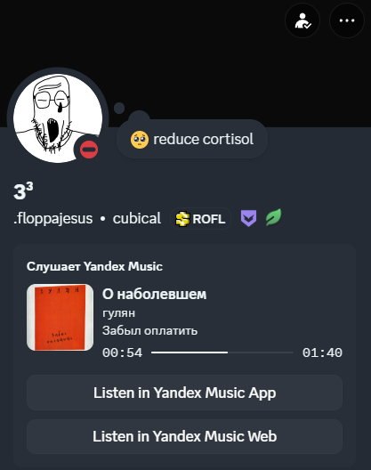

Твоя музыка
без Yandex Plus
Модифицированный open-source client Яндекс Музыки для ПК со встроенным обходом аудиорекламы, свободными текстами песен и Discord статусом.
Преимущества модификации
Стабильный функционал, полностью очищенный от ограничений и визуального спама
Обход аудиорекламы
Полное вырезание коммерческих рекламных треков, баннеров и навязчивых предложений во время прослушивания потока.
Свободные тексты
Интеграция открытых синхронизированных баз данных Lrclib.net и MusixMatch прямо в плеер без подписки Плюс.
Discord Rich Presence
Красивый игровой статус активности «Слушает...» с отображением названия трека, обложки и точной шкалы времени.
Режим Разработчика (Dev)
Полный доступ к скрытым экспериментам Яндекса. Отключайте новый дизайн «Моей волны» в одно нажатие.
Проверенная безопасность
Прозрачный исходный код без скрытых RAT-троянов, логгеров или стилеров. Ваши сессии и токены защищены.
Умный перенос треков
Моментальный импорт, копирование и автоматическое выставление лайков трекам из любых открытых плейлистов по ссылке.
Кастомизация тем и экранов
Посмотри, как трансформируется плеер при использовании различных встроенных стилей оформления
Трансляция активности в Discord RPC
Модификация без сторонних утилит связывается с локальным клиентом Discord, выводя детальную карточку прослушиваемого трека в профиль.

Доступные дистрибутивы
Выберите сборку под вашу операционную систему
YandexMusicMod v2.23.2 BugFix (Windows)
Полноценный установщик для актуальных версий Windows. Включает исправления падений Chromium-движка, фикс сворачивания в трей и стабильную загрузку локального кэша.
Windows альтернативы
Linux дистрибутивы
Отзывы нашего комьюнити
Честные мнения пользователей, собранные из официальных каналов обратной связи
Оставить свой отзыв
Решение технических проблем
Интерактивная база знаний на основе официальных разборов и логов разработчиков
Алгоритм «Чистой установки» (Решает 80% проблем)
Выполните этот пошаговый сброс, если приложение вылетает, циклически просит авторизацию или зависает на белом экране при старте:
Удалите модификацию через стандартную панель «Программы и компоненты» Windows.
Нажмите сочетание клавиш Win+R, пропишите директорию %localappdata%\Programs и удалите папку YandexMusic.
Снова нажмите Win+R, введите команду %appdata% и полностью очистите папку YandexMusic (или YandexMusicMod).
Запустите скачанный инсталлятор актуальной версии v2.23.2 заново.
Теневой бан аккаунта (Реклама вместо музыки)
Сервера Яндекса принудительно заменяют ваши рекомендации аудиорекламой, либо поток прерывается спустя 2–3 секунды.
Доступные методы решения:
- Кнопка разблокировки: В настройках мода версий v2.23.1+ нажмите функциональную клавишу «Снять блокировку».
- Новый профиль: Полностью выйдите из текущего забаненного аккаунта, зарегистрируйте чистый профиль и перенесите туда свои плейлисты.
- Покупка подписки: Временное приобретение Яндекс Плюс мгновенно снимает бан с серверов (после окончания подписки бан может вернуться).
Зависания интерфейса и оконные баги
Бесконечный редирект авторизации в браузере
Полностью закройте плеер (включая иконку в системном трее). Очистите локальную директорию кэша сессии по пути: C:\Users\Имя_Пользователя\AppData\Roaming\YandexMusic, после чего запустите мод снова.
Прозрачный, чёрный или белый экран на Windows 11
Это сбой аппаратного ускорения Chromium на дискретных видеокартах ноутбуков. Зайдите в «Настройки графики Windows» и принудительно укажите для процесса YandexMusic.exe использование встроенного энергоэффективного графического ядра (Intel/AMD).
Как отключить новый дизайн «Моей волны» (интерфейс цветка)
1. Кликните на фиолетовую кнопку dev в правом нижнем углу плеера.
2. Откройте подраздел Experiments.
3. В поисковую строку введите флаг WebNextNewWaveTab.
4. Измените состояние флага с Default на значение Off и обновите окно комбинацией клавиш Ctrl+R.
Сетевые конфликты, прокси и ошибка HTTP 451
Если приложение выводит плашку «Не удалось получить часть данных при старте», это признак блокировки со стороны VPN или GoodbyeDPI / Zapret утилит.
Инструкция по очистке сетевых маршрутов:
Откройте командную строку Windows (CMD) строго от имени Администратора и выполните следующие системные команды:
ipconfig /flushdns
netsh winsock reset
netsh int ip resetПосле завершения команд обязательно перезагрузите компьютер. Также рекомендуется отключить сетевой протокол IPv6 в свойствах вашего интернет-подключения.
Сбои подгрузки текстов песен и горячих клавиш
Заглушка «Купите Яндекс Плюс» на вкладке субтитров
Яндекс ограничил бесплатную раздачу текстов. Перейдите в меню мода плеера -> раздел «Текст песен» -> переключите стандартный источник на бесплатные открытые синхронизированные базы данных Lrclib.net или MusixMatch.
Перестают работать мультимедийные клавиши клавиатуры (Fn)
Известная проблема совместимости ядра Chromium в версиях мода выше 2.2.0. Если для вас критически важна стабильная работа клавиш управления треками и кнопок мыши, используйте классическую сборку v2.13 fix.